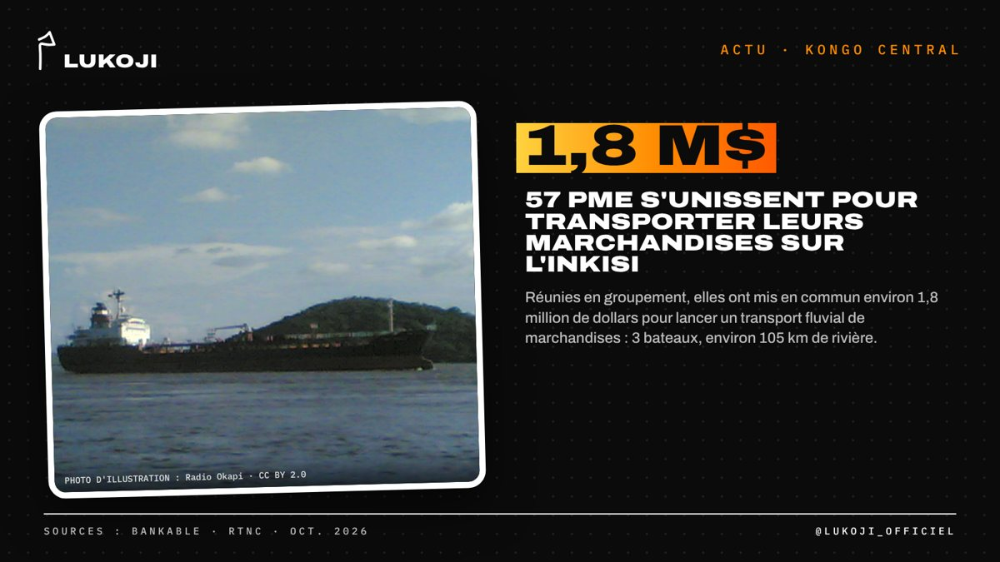

Au Kongo Central, 57 petites et moyennes entreprises ont décidé de faire ensemble ce qu'aucune ne pouvait faire seule : lancer un transport fluvial de marchandises sur la rivière Inkisi.
Ce qui a été annoncé
Selon Bankable (16 octobre 2026), ces PME se sont regroupées en groupement d'intérêt économique (GIE) et ont mis en commun environ 1,82 million de dollars. L'argent doit servir à faire naviguer trois bateaux sur un corridor d'environ 105 kilomètres. Le projet a aussi été relayé par la RTNC, Congo Quotidien et les services de la Primature.
Le chiffre exact varie selon les sources : Bankable parle de 57 entreprises, d'autres médias de « près de 60 ». Le principe reste le même.

Pourquoi c'est intéressant pour un entrepreneur
Pour une PME congolaise, acheter un bateau, le faire réparer et payer un équipage, c'est hors de portée. Le transport par route coûte cher, et quand la route est mauvaise, la marchandise arrive en retard ou abîmée. Chaque entreprise subit ce problème dans son coin.
En se regroupant, ces 57 entreprises changent de taille. Divisé par 57, un investissement de 1,8 million de dollars représente en moyenne un peu plus de 30 000 dollars par entreprise. C'est encore une grosse somme, mais elle devient discutable avec une banque, un associé ou sur plusieurs années d'épargne.
Le GIE, comment ça marche
Un groupement d'intérêt économique permet à plusieurs entreprises de mettre des moyens en commun sans fusionner. Chacune garde son nom, ses clients et ses comptes. Le groupement porte seulement l'activité partagée, ici le transport.
L'outil existe dans l'espace OHADA, dont la RDC fait partie. Il sert aussi bien pour acheter en gros, partager un entrepôt, une chambre froide, un camion ou un stand dans une foire.
Trois questions à te poser
- Quel coût te bloque aujourd'hui ? Un équipement, un local, un transport, une certification. Si d'autres entrepreneurs ont le même blocage, il y a peut-être un groupement à monter.
- Avec qui ? Les meilleurs partenaires sont souvent des entreprises du même secteur ou de la même zone, qui ne se battent pas pour les mêmes clients.
- Qui décide ? Un groupement tient sur des règles écrites dès le départ : qui paie quoi, qui utilise quoi, comment on règle un désaccord, comment on sort.
Le projet de l'Inkisi devra encore prouver qu'il tient dans la durée. Mais l'idée de départ est simple et elle vaut pour beaucoup de secteurs : quand l'investissement est trop lourd pour toi, cherche ceux qui portent le même poids.
Sources : Bankable (16 octobre 2026), RTNC, Congo Quotidien (20 octobre 2026), Primature (19 octobre 2026).
LUKOJI · Innover · Créer · Impacter